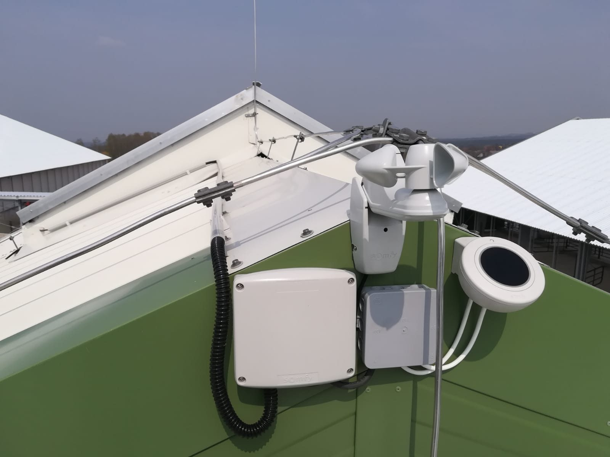

Meteostanice pro stáj.
Meteostanice AG-06 je určená pro plně automatické ovládání stáje. Sleduje počasí a podle větru, srážek a teploty automaticky řídí větrání celé stáje. Díky tomu pomáhá udržet stabilní mikroklima bez jakékoliv ruční obsluhy.

Dvě provedení dle potřeby zákazníka.

Meteostanice AG-06
Nejnovější model s přehledným dotykovým displejem, určený pro automatické řízení celé stáje. Podle větru, srážek a teploty automaticky reguluje celou stáj - s odlišným nastavením pro návětrnou a závětrnou stranu. Při požadavku zákazníka možnost napojení meteostanice na osvětlení, lopaty, případně ventilátory.
| Displej | Dotykový, individuální ovládání |
|---|---|
| Senzory | Vítr (každá strana zvlášť), vyhřívaný senzor srážek, 1-3 teplotní senzory |
| Funkce | Automatické ovládání celé stáje bez lidského faktoru, technologie SMART |
Jak systém řídí stáj.
Zapojený větrací systém se základním softwarem funguje na principu otevírání a zavírání stěn po jednotlivých třetinách. Ručně můžeme nastavit, jak často a do jaké hodnoty se má systém pohybovat v závislosti na aktuálních povětrnostních podmínkách. V případě zapojení pomaloběžných větráků se zadává teplota, při které se dají větráky do chodu.
Dále je zde možné nastavit funkci pro zimní provoz. V zimním provozu se nastavuje teplota, která způsobí přivření plachet na jednu, nebo dvě třetiny dle nastavené hodnoty. Plachty zůstávají přivřené po celou dobu poklesu pod tuto teplotu až po funkci mráz, zároveň respektují překročení hodnot rychlosti větru a přítomnosti srážek.
Druhá úroveň zimního provozu je funkce mráz, která způsobí úplné zavření plachet. Tato funkce slouží k ochraně stáje před velkým mrazem, který by kromě zdravotních komplikací zvířat mohl způsobovat také zamrzání krmení a napáječek. Plachty zůstávají zavřené po celou dobu poklesu pod tuto mrazovou teplotu.
Výhody meteostanice AG-06.
- 1. Ovládání štěrbinyAutomatické otevírání a zavírání hřebenových větracích štěrbin podle aktuálního počasí.
- 2. Ovládání bočních systémůAutomatické řízení elektricky ovládaných bočních ventilačních systémů.
- 3. Adekvátní osvětleníZajištění adekvátního osvětlení ve stájích. Meteostanici je možné propojit se zdroji umělého osvětlení tak, abyste zajistili adekvátní úroveň sdruženého osvětlení v průběhu celého roku.
- 4. Nucená ventilaceNucená ventilace, která zabrání tepelnému stresu u skotu. Systém díky tepelným čidlům vyhodnocuje aktuální teplotu ve stáji, a v případě potřeby aktivuje nucenou ventilaci (ventilátory). Jeho výhodou je, že systém aktivace není závislý na lidském faktoru.
- 5. Eliminace přehřívání boxových stájíEliminace přehřívání boxových loží u podélné obvodové stěny. Systém umí v letních měsících nastavit rozvinutí rolovacích stěn typu D tak, aby se zabránilo liniovému přehřívání boxových loží podél obvodových stěn stájí.
- 6. Letní a zimní provozZákladní přednastavení pro letní a zimní provoz. Naše meteostanice má přednastavené základní režimy regulace stájového mikroklimatu pro letní a zimní měsíce. Tyto parametry lze optimalizovat podle specifik farmy, lokality a podobně.

Meteostanice AG-mini
Meteostanice pro automatické zavírání křídlových větracích štěrbin v případě deště. Ruší nutnost obsluhy. Funguje automaticky na základě dešťového čidla.
Vyplňte formulář a my se vám ozveme do následujícího pracovního dne.
Co se ptáte nejčastěji.
Co všechno meteostanice ovládá?
AG-06 je určena pro automatické řízení celé stáje - hřebenových větracích štěrbin i bočních ventilačních systémů. Při požadavku zákazníka ji lze napojit i na osvětlení, lopaty, případně ventilátory.
Jaké senzory meteostanice používá?
Senzory rychlosti větru (jeden na každou stranu stáje), vyhřívaný deštní senzor, který detekuje i sníh, a jeden až tři teplotní senzory podle velikosti stáje.
Funguje automaticky, nebo se musí obsluhovat?
Reaguje automaticky podle naměřených hodnot z čidel větru, srážek a teploty. Ruční doladění nastavení je možné podle konkrétního provozu.
Liší se větrání podle strany stáje?
Ano. Nastavení je odlišné pro návětrnou a závětrnou stranu, takže každá strana stáje větrá podle aktuálních podmínek.
Lze meteostanici přidat k naší ventilaci?
Ano, vhodné zapojení posoudíme podle konkrétního provedení ventilace a elektroinstalace.